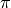

sfs_coder documentation¶
sfs_coder Classes and methods¶
contents of command.py¶
- class command.Command¶
This class stores information from parsed command lines and provides the mechanics to call SFS_CODE/ms commands.
- execute(rand=1)¶
execute a simulation command
Parameters:
- rand=1
a random integer. If the value is not reset by the user then a new random number is rolled within self.execute.
- class command.MSCommand(prefix='out', ms_loc='ms', err='err', outdir='/Users/luricchio/projects/cluster_backup/sfs_coder/doc/sims')¶
A class that handles some of the specifics of calling ms commands. A bit underdeveloped at the moment, but functional and utilized by SFSCommand.convert_to_ms()
More documentation will arrive as development of this class continues.
- class command.SFSCommand(outdir='/Users/luricchio/projects/cluster_backup/sfs_coder/doc/sims', prefix='out', err='err')¶
This class is used to store, parse, and convert SFS_CODE command lines.
Upon initialization, an object of the SFSCommand class sets the values of many of its attributes to the SFS_CODE defaults.
Parameters:
- outdir=os.path.join(os.getcwd(), ‘sims’)
A directory containing subdirectories with sfs_code simulations.
- prefix=’out’
The prefix of the out directory and the data files within the out directory.
- err=’err’
The name of the directory that contains all the stderr ouput from calling sfs_code.
Attributes:
- self.com_string=’‘
the entire command stored as a single string.
- self.outdir= outdir
the parent directory of output directories for sets of SFS_CODE simulations
- self.sfs_code_loc = ‘’
the location of the SFS_CODE binary.
- self.N = 500
the number of individuals in the ancestral population.
- self.P = [2]
the ploidy of the individuals in each population.
- self.t = 0.001
. This is the value of
 in the ancestral population
in the ancestral population
- self.L = [5000]
an array containing the length of each simulate locus.
- self.B = 5 self.p[0] self.N
the length of the burn in (generations).
- self.prefix= prefix
the prefix for the output file directory and each simulation file.
- self.r=0.0.
. The value of
 in the
ancestral population.
in the
ancestral population.
- self.n_pops=1
number of populations.
- self.n_iter=1
number of simulations.
- self.line=[]
an array of strings, each of which is an argument to SFS_CODE. This is the attribute that is used to execute SFS_CODE commands.
- add_event(event)¶
add an event to a command line.
Parameters:
- event
an array of strings corresponding to the event.
e.g., adding a mutation at locus 0 at time 0 with
event = ['--mutation', '0','L','0']
- build_BGS(n_sim=10, theta=0.0001, recomb=True, rho=0.001, N=250, n_sam=10, alpha=5, L=100000, Lmid=100000)¶
A method for running simulations of background selection. This method is a bit underdeveloped at the moment, so stay tuned for more on how it works.
- build_RHH(alpha=1000.0, N0=5000.0, rho0=0.001, lam0=1e-10, delta=0.01, L0=-1, L1=100000.0, loop_max=10, L_neut=1000.0, theta_neut=0.001, minpop=100, recomb_dir='./recombfiles', outdir='sims', TE=2, r_within=False, neg_sel_rate=0.0, alpha_neg=5, additive=1, Lextend=1, mutation=, []bottle=, []expansion=[])¶
A method to build a recurrent hitchhiking command line using the method of Uricchio & Hernandez (2014, Genetics).
Dependencies:
- scipy
- mpmath
Parameters
- alpha = 1000
, the ancestral population scaled strength of selection. Note that demographic events can change N, and hence they also changle alpha.
- N0 = 5000
the ancestral population size
- rho0 = 0.001
the population scaled recombination coefficient in the ancestral population.
- lam0 = 10*-10
the rate of positive substitutions per generation per site in the population.
- delta = 0.01
a single parameter that encapsulates both delta parameters from Uricchio & Hernandez (Genetics, 2014). Smaller values of delta result in dynamics that are a better match for the original population of size N0, but are more computationally expensive. We do not recommend using values of delta greater than 0.1. For more information please see the paper referenced above.
- L0 = -1
the length of the flanking sequence on each side of the neutral locus. If L0 is not reset from it’s default value, it is automatically set to L0 = s0/r0, where s0 and r0 are alpha/2N0 and rho/4N0, respectively.
- theta_neut = 0.001
the neutral value of theta.
- TE=2
the ending time of the simulation in units of 2*N0*self.P[0] generations.
- r_within=False
Currently only works with this option set to False, but in the future will allow for recombination within the neutral locus.
- build_genomic(basedir='../src/../src/req', outdir='/Users/luricchio/projects/cluster_backup/sfs_coder/doc/input_files', datafile='hg19_gencode.v14.gtf.gz', chr=2, begpos=134545415, endpos=138594750, db=136545415, de=136594750, withseq=0, fafile='hg19.fa.gz', phast_file='hg19_phastCons_mammal.wig', dense_dist=5000, regname='', annotfile='', recombout='', sel='SEL')¶
A method to build simulations of genomic regions with realistic genome structure. The default data sources and options are all human-centric, but in principle these methods could be used to simulate sequences from any population for which the relevant data sources are available.
This function mostly just calls a number of perl scripts, originally implemented by Ryan Hernandez, to build the input to SFS_CODE. These perl scripts are bundled with sfs_coder in the directory src/req
A number of datasources are also included with sfs_coder, including...
By default, this function simulates 4 MB of sequence centered on the lactase persistance locus on chrhomosome 2.
Parameters:
- basedir=os.path.join(os.getcwd(),’req’)
the directory where all the datasources and perl for this method are located
- outdir=os.path.join(os.getcwd(),’input_files’)
the directory where the sfs_code annotation files will be written
datafile=’hg19_gencode.v14.gtf.gz’
- chr=2
chromosome number to query
- begpos=134545415
genomic coordinate of the beginning of the simulated sequence
- endpos=138594750
genomic coordinate of the end of the simulated sequence
- db=136545415
genomic coordinate of the region in which to include dense neutral sequences. Neutral sites within this region will be simulated if they are within a specified distance of one of the simulated genomic elements (given by dense_dist)
- de=136594750
genomic coordinate of the end of the dense neutral region
withseq =0
fafile=hg19.fa.gz
- phast_file=’hg19_phastCons_mammal.wig’
file containing conserved element coordinates inferred by phastcons
- desnse_dist=5000
the distance to the right and left of a conserved or coding element that is simulated as neutral non-coding within the bounds of db and de.
regname=’‘
annotfile=’‘
recmbout=’‘
- sel=True
If true, draw selection coefficients from a gamma distribution of selection coefficients for conserved elements and coding regions. These distributions are taken from Boyko et al (coding) and Torgerson et al (non-coding).
- convert_sfs_ms()¶
A method to convert an sfs_code command line to ms. Most but not all switches are converted (the method should let you know if you try to use an unsupported switch). The method will ignore selection based switches in SFS_CODE (since ms only includes neutral demographic models).
This method has been tested only sparingly and it is recommended that it is used with great caution.
- genomic(basedir='../src/../src/req', outdir='/Users/luricchio/projects/cluster_backup/sfs_coder/doc/input_files', datafile='hg19_gencode.v14.gtf.gz', chr=2, begpos=134545415, endpos=138594750, db=136545415, de=136594750, withseq=0, fafile='hg19.fa.gz', phast_file='hg19_phastCons_mammal.wig', dense_dist=5000, N=2000, mutation=[], sel=True, model='', t=0.001, rho=0.001, nsim=10, nsam=[20])¶
a method for running simulations of genomic elements using realistic genome structure. Most of the heavy lifting is done by the build_genomic() method. This method exists mostly as a slimmed down interface to that method, with the major difference being that this version allows for the inclusion of a demographic model. Currently, only the demographic model of Gutenkunst (2009, PLoS Genetics) is included.
- gutenkunst(add_on=False, nsim=1, N=10000, non_coding=False, recombfile='', nsam=[100], mutation=[], t=0.001, rho=0.001, loci=[], sel=[], L=[])¶
A method that adds the Gutenkunst (2009, PLoS Genetics) model to an SFS_CODE command line.
- parse_string()¶
A method to parse SFS_CODE command lines. By default, every switch is stored as an array with the exception of certain special cases that are stored as dictionaries.
Note, only the short form of SFS_CODE options are currently fully supported! For example, -t 0.002 is supported but –theta 0.002 is not.
- three_pop(add_on=False, nsim=1, N=10000, non_coding=False, recombfile='', nsam=[100, 100, 100], mutation=[], t=0.001, rho=0.001, loci=[], sel=[], L=[], t_end=0.60274, t_expand_p0=0, expand_p0=1.68493, t_split_p0_p1=0.219178, t_split_p1_p2=0.544658, bottle_p1_0=0.170732, bottle_p1_1=0.47619, bottle_p2=0.242857, growth_p1=58.4, growth_p2=80.3, mig_p0_p1=6.15, mig_p1_p0=0.5, mig_all=[0.738, 0.4674, 0.06, 0.192, 0.01938, 0.09792], t_super=0.391465, model='guten')¶
A general three population model with growth events. Inspired by Gutenkunst et al (2009, PLoS Genetics) and Gravel et al (2011, PNAS). For a pictorial representation see Figure 3A of the Gutenkunst paper.
The default parameters are set to Gutenkunst et al. The maximum likelihood estimates of Gravel et al are also included.
To use the gravel model parameters, use model=’gravel’.
The user can specify the model parameters as desired. To use a user specified model, simply use model = ‘’. Any unspecified parameters are set by default to the parameters of the Gutenkunst model.
contents of sfs.py¶
- class sfs.Mutation¶
a class to store the data associated with a variant in an SFS_CODE output file. Note, both mutations and substitutions are stored as instances of this class.
Attributes:
- self.locus=-1
The locus number of the variant
- self.AXY=’?’
‘A’ for autosomal, ‘X’ or ‘Y’ for the corresponding sex chromosomes
- self.pos=-1
The position within the locus. Note that the positions within each locus start from 0.
- self.t_init={}
A dictionary, keyed by population number, and storing the time that the variant arose
- self.t_fix={}
A dictionary, keyed by population number, and storing the time that the variant fixed within the population. If the variant is segregating, the time stored is the time of sampling.
- self.tri_nuc=’NNN’
The ancestral trinucleotide (the middle base is the mutated base, so this is not necessarily a codon!)
- self.deriv_n=’N’
The derived nucleotide
- self.non_or_syn=’?’
Is the mutation synonymous (0) or nonsynonymous (1). 0 also is used to indicate non-coding.
- self.ancest=’?’
Ancestral amino acid
- self.deriv_aa=’?’
Derived amino acid
- self.fit=’?’
fitness effect of the mutation (0 for neutral)
- self.chrs = defaultdict(dict)
A dictionary of dictionaries that is keyed by population and chromosome number.
E.g., if the derived allele is present on chromosome 11 in population 2, then
self.chrs[2][11] = True
self.pops_numchr = {}
A dictionary that stores the number of chromosomes that carry the derived allele in each population.
- class sfs.SFSData(file='')¶
A class that handles the basic parsing of sfs_code output file data.
Parameters:
- file= ‘’
the path to the file that is to be read.
Attributes:
- self.file = file
the path to the file that is to be read.
- sims = []
an array of sfs.Simulation objects.
- get_sims()¶
A method that reads sfs_code output files and stores all the data in sfs.Simulation objects.
- class sfs.Simulation¶
A class to store the data from SFS_CODE simulations.
Attributes:
self.command = command.SFSCommand()
self.data = ‘’
self.loci = defaultdict(lambda: defaultdict(list))
A dictionary of dictionaries indexed by locus and position. Each dictionary of dictionaries is a list of Mutation objects that occur at the corresponding locus and position.
e.g., self.loci[0][0] is a list of Mutation objects that occur at the first position in the first locus.
Note that these keys will only exist in self.loci if there were mutations at this particular point in the sequence in the sample from the simulation.
self.muts = []
A list of all the Mutation objects in the simulation.
- calc_S(multi_skip=True, loci=[])¶
calculate the number of segretating sites within all populations.
Parameters:
- multi_skip = True
skip sites that are more than biallelic if true
- loci = []
A list of loci over which to calculate the number of segregating sites. Uses all loci if this is left blank.
- calc_fit(pop=0)¶
calculate the fitness of the sampled chromosomes within a population.
Parameters:
- pop=0
population number
- calc_pi(multi_skip=True, loci=[])¶
calculate the mean pairwise diversity per site bewteen pairs of sequences across a set of loci. If the loci parameter is left undefined by the user, then this method calculates  over all loci in the simulation.
Parameters:
multi_skip=True
If True, skip loci that are multiallelic. Otherwise lump all the derived alleles together.
loci=[]
An array of loci over which to calculate . If left blank, all loci are used in the calculation.
Return value: An array of values of values indexed by population number.
- calc_pi_by_locus()¶
calculate the value of independently for each locus.
Return value: An array of arrays of pi values, indexed by population and then locus number.
e.g., if the return value is stored in the variable pi, pi[0][1] is the value of in population 0 at locus 1.
- get_sfs(pop=0)¶
compute the site frequency specutrum for a population
Parameters:
- pop=0
population number